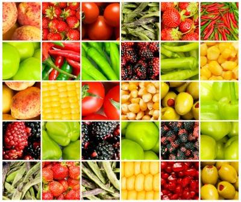

| Какво показват цветовете на плодовете и зеленчуците? | |
|---|---|
|
При хранене с различно оцветени плодове и зеленчуци, ще получиш най-доброто от всички ползи за здравето. Всеки плод или зеленчук с различен цвят съдържа уникални компоненти, които са от съществено значение за здравето ти. Червените плодове и зеленчуци Те имат големи ползи за здравето, включително предотвратяване на сърдечно-съдови заболявания и намаляване на риска от рак. Червеният цвят се асоциира със сила, здраве и страст. Зеленчуците и плодовете от червената група са богати на желязо и калий. Те също съдържат фитохимикали като ликопен и антоцианини, които помагат на организма в борбата с много болести. Тези фитохимикали имат изключителни функции против стареене и за защита от рак. Червените плодове и зеленчуци са чудесни за имунната система и могат да помогнат, когато човек е слаб, анемичен и уязвим за вирусите. Червеният цвят на тези плодове и зеленчуци се дължи на съдържанието на ликопен в тях. Ликопенът е антиоксидант, който неутрализира свободните радикали в организма. Той е известен с това, че подпомага паметта и намалява риска от някои видове рак. Примери за плодове и зеленчуци, богати на ликопен, са :доматите, дините, розовият грейпфрут и гуавата. Ликопенът става още по-силен при готвене. Храни с високо съдържание на ликопен са: доматената супа, доматения сос, доматеното пюре, соса за спагети и др. |
 |